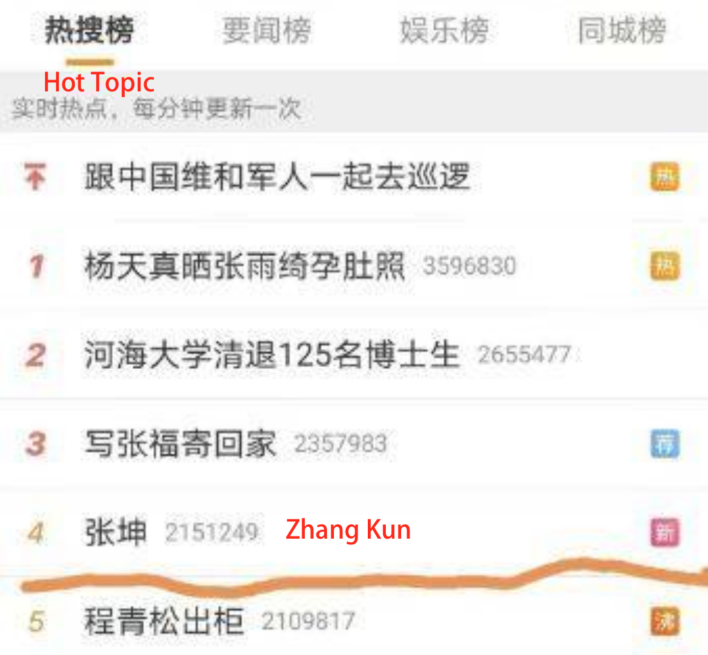

On 25th of January 2021, a name came to the top on Weibo Hot Topics, which is a fund manager Zhang Kun. Zhang is famous for his well-managed fund instrument Yifangda that accumulates a huge amount of ‘fans’, but this time, Zhang went to the Weibo hot topic* because of the poor deficit on the fund in general and especially his instrument (Xue, 2021) . Under the topic, there are lots of people commenting below about their great loss and also their admiration toward him. Well noticing, this group of investors are very young, with a major age group of 20-30, according to their Weibo profile. Not only Weibo, Xiaohongshu (or RED) is also becoming a popular platform for people to share and look for fund investment advice. More people, especially younger investors with little knowledge about fund investment are now seeking advice on RED. There are also lots of journal articles and reports commenting on this phenomenon with doubts and criticisms towards RED fund-related posts and its users. This project aims to study the investment behavior of the people who browse information on RED and to compare with the conclusions from some published reports. Noticing that there is a rising trend discussing fund investment on RED, the study hopes to bring a reference to investment beginners on their choice of information sources and also a primary source for further research on the RED usage and investment decisions.
Originally, RED targets itself as an online-shopping platform with e-commerce trading functions and a community for people to share their shopping experiences or sales information. According to the product trial report by Shelly Cai (2016), the user group of RED is very young, born after the 1980s, with a majority of teenagers aged around 22, either students or white collar workers. Female users take a huge proportion of the group and mostly they are based in Beijing, Shanghai, and other metropolitan cities. As for the user experience of RED, they have a very well-designed algorithm for content distribution that provides a passive browsing experience to users and gradually increases the purchasing behavior of users. . For instance, when users are browsing fund investment related posts on it, the algorithm will generate more related posts to users, and therefore enhance users’ stickiness to the app. As more posts that the users approach, they are more likely to rely on looking for information on RED and their decisions on investment are affected along with the information they receive.
Source: *Weibo hot topic, Zhang Kun ranked 4th
MobTech, a leading data & AI technology platform published 2 research reports on fund investment and the user portraits in 2020. It mentioned that the Chinese fund investors on mobile devices increased more than 20 millions within the first 6 months in 2020, reaching up to 125 millions investors in total until Feb, 2021 (MobTech, 2021). The majority groups aged from 18 to 45 with a proportion of 94.6%. Investors aged from 25-34 take the place of 43.9% of total investors population. Group aged from 35-44 is 34.6% and the group aged from 18-24 is 16.1% of the whole fund investors in China. It is noticeable the majority group of investors is becoming younger and most of their occupation are white collar workers and students, according to the report* . The enormous amount of total investors comes for a reason. Take a look at the market data cited from the Asset Management Association of China (2021). The number of Raise Funds in China increased from 6623 (January 2020) to 8037 (January 2021) within a year. What’s more, the share and value increased YOY 22.4% and 32.9% respectively, which are worth billions of RMB. In 2020, a stock market investor can only earn an average of 3.6% return of the asset but in the fund market, investors received a return of 14.0% , which attracts more investors who jumped into the pool of funds.
Source: *MobTech, 2020 Chinese Fund Investers Report
Source: *MobTech, 2020 Chinese Fund Investers Report
One of the reports from MobTech focuses on RED and Bilbili as these two representative platforms are the most frequently used platforms for social media users to discuss fund investment online. A fun fact about fund investors is that they are called “chicken farmers”. In Chinese, the word “fund” includes a character which has the same pronunciation as “chicken”. The media likes to describe the phenomenon of younger investors investing in the fund market as a metaphor of “farmers raising their chicken in the market”. There are plenty of funds in Chinese market and lots of investors as well. But they assumed that fund investment is an easy task just like raising chickens. They won’t spontaneously learn how to invest the fund systematically and they prefer receiving information, especially the ‘model answer’ from KOLs passively, as the report is written in a humorous way. No matter how well they are educated, most of them are still not familiar with the rules in the fund market. The research report showed that 63.7% of the investors are holding a bachelor’s degree or above but only 8.3% of the investors have paid for relevant courses for educational purposes. “In terms of fund investment, they prefer copying KOL’s ‘homework’ rather than work by themselves.” MobTech commented in the report. Another fun fact that the report* mentioned is the KOLs on RED. Some influencers switched their focus from couples relationship, fashion, 3C technology or beauty to fund investment.“The influencers that are teaching you how to invest in the fund market right now are probably the same group of people who teach you how to flirt weeks ago.”
created with
Website Builder Software .